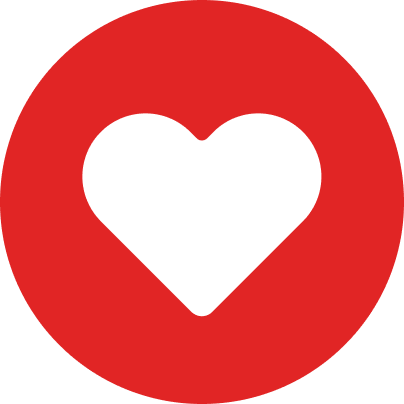
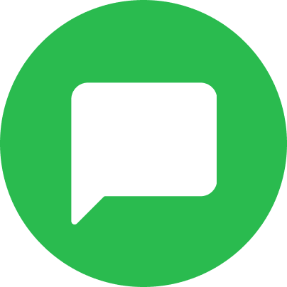
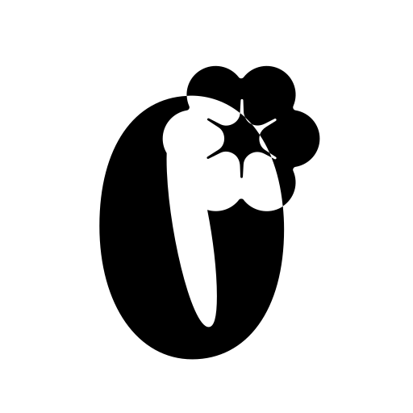
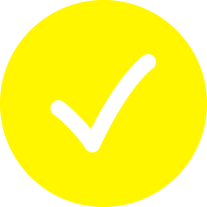

Your notifications


Sarah Jenkins liked your post The Evolution of Swiss Typography
2 hours ago

Alex Chen commented: "This completely changed how I approach my grid layouts. Thank you!"
5 hours ago
Marcus Wright started following you.
1 day ago

Your post Mastering CSS Grid was published successfully.
3 days ago